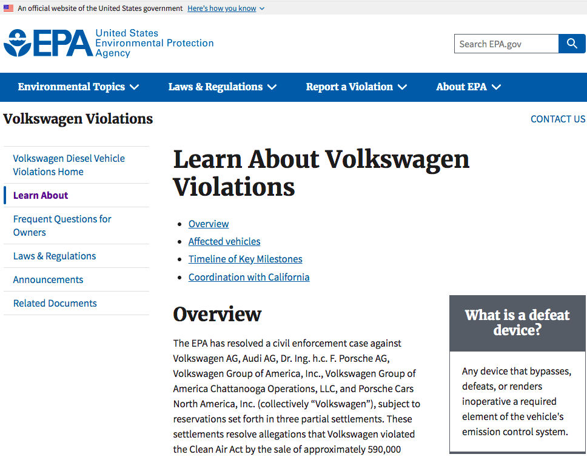

Öğrenen Sürümü
Eğitici Sürümü
Öğrenen Sürümü
Eğitici Sürümü
Modül 12: Haberi Diğer Medya İçeriklerinden Ayırt Etmek
Modülün Tanımı
Bu modülün ana amacı, haberlerin diğer medya içeriklerinden nasıl ayırt edileceğini öğretmektir. İkincil amaç ise Modül içeriğini öğrenenleri eğitmek için kullanmak isteyen eğitmenlere rehberlik etmektir.
Bu amaçlardan hareketle, reklâm, promosyon, tanıtım, propaganda, ham bilgi (raw information) ve eğlence gibi haber ve diğer medya içeriklerinin tanımlarına yer verilmektedir. Haberi diğer içeriklerden ayırt etmek için kritik öneme sahip temel özellikler, “evrensel haber sürücüleri” (universal news drivers) uygun örneklerle açıklanmaktadır. Modülde konunun nasıl öğretileceğine ilişkin yönergeler sunulmaktadır.
Bu Modülü başarıyla tamamlayanlar şunları yapabilir:
- Haberin ne olduğunu ve temel özelliklerinin neler olduğunu tanımlar (doğrulama, bağımsızlık ve hesap verebilirlik).
- Diğer medya içeriklerini tanımlar ve bunları haberden ayırır.
Bu modülü başarıyla tamamlayan eğitmenler, konuyu nasıl öğreteceklerini anlarlar.
Modülün Yapısı
Bu Modül aşağıdaki bölümlerden oluşmaktadır:
- Amaç, İçeriğin Tanımı ve Öğrenme Çıktıları
- Modülün Yapısı
- Öğrenenler için Yönerge
- Eğitmenler için Yönerge (hazırlık, kullanılacak yöntemler ve eğitmenler için ipuçları)
- İçerik (çalışma materyalleri ve alıştırmalar)
- Test
- Kaynakça (yararlanılan kaynaklar ve önerilen kaynaklar ile videolar)
Modülün ana hedefleri, içerik ve öğrenme çıktıları Modülün Tanımı bölümünde açıklanmaktadır. İçerik, tüm çalışma materyallerini ve ilgili alıştırmaları içermektedir. Test, öğrenenlerin kendilerini ve ilerlemelerini test edebilmeleri için hazırlanmıştır. Genellikle çoktan seçmeli veya doğru/yanlış sorularından oluşmaktadır.Kaynakça, yararlanılan kaynaklar ve önerilen kaynaklar şeklinde iki bileşenden oluşmaktadır. İçerik hazırlanırken yararlanılan ve atıf yapılan kaynaklar Kaynakça başlığı altında listelenmiştir. Ek Kaynakça, konuyla ilgili daha fazla bilgi edinmek isteyenler için okunması/izlenmesi önerilen kaynaklar ve videoların listesinden oluşmaktadır. Öğrenenler için Yönerge, öğrenenlere yönelik talimat ve önerileri içermektedir. Eğitmenler için Yönerge, eğitimin farklı aşamalarında eğitmenleri yönlendirmekte ve konunun öğretiminde kullanılacak faydalı ipuçları sağlamaktadır.
Öğrenenler için Yönerge
Öğrenenlerden içeriği dikkatle okumaları, önerilen videoları izlemeleri ve alıştırmaları yapmaları beklenmektedir. Daha fazla bilgi gereksinimi duydukları konularda kaynakçalarda listelenen kaynaklara başvurabilirler. İçerik üzerindeki çalışmalarını tamamladıktan sonra, ilerlemelerini değerlendirmek için modül sonundaki testi yapmaları önerilir.
Eğitmenler için Yönerge
Bu bölüm, ele alınan konunun nasıl öğretileceğine ve Modül içeriğinin bu amaçla nasıl kullanılabileceğine ilişkin eğiticilere yönelik öneri ve ipuçları içerir. Test sonuçlarına göre gerekirse çalışma materyali yeniden gözden geçirilebilir.
Hazırlık
Görsel materyallerle desteklenen bir sunum (PowerPoint/Prezi/Canva) hazırlanması önerilir. Ayrıca kullanılan örneklerin ve önerilen alıştırmaların hedef kitleye uygun olması önerilir. Yerel ya da iyi bilinen konuların/örneklerin kullanılması öğrenenlerin ilgisini çekme ve sürdürme konusunda yardımcı olur.
Başlarken
Konuya ısındırmak amacıyla başlangıçta Kahoot veya Mentimeter gibi araçlar kullanılarak katılımcılara konuyla ilgili genel ve kısa bazı sorular (3 ile 5 soru) yöneltilebilir. Böyle bir başlangıç öğrenenlerin konuyla ilgili mevcut bilgi düzeyleri hakkında bilgi sağlayacağı gibi bir motivasyon kaynağı olarak da kullanılabilir. Bu amaçla kullanılabilecek sorulara bazı örnekler şunlar olabilir:
- Haber nedir?
- Promosyon ve haber arasındaki fark nedir?
- Haber ve eğlence arasında nasıl bir ayrım yapılabilir?
- Hesap verebilirlik (accountability) ne demektir?
Kullanılacak Yöntemler
Eğitim sırasında çeşitli öğretim yöntemleri bir arada kullanılabilir:
- Ders anlatma
- Grup çalışması
- Bireysel çalışma
- Kendini yansıtma
Eğitmenler için İpuçları
Isınma
Öğrenenleri sürece dahil etmenin ve öğrenecekleri şeyler hakkında ortak beklenti oluşturmanın etkili bir yolu haberlerin diğer medya içeriklerinden nasıl ayırt edileceğine ilişkin birkaç ön hazırlık sorusu sormaktır. Örneğin şu sorulabilir: Medya içeriğindeki potansiyel farklılıklara örnek verebilir misiniz? Isınma etkinliği aşağıdaki unsurları içerebilir:
- medya içeriğinin farklı örneklerini hazırlayın (haber, reklam, eğlence gibi)
- öğrenenlere, örneklerinin haber olup olmadığını sorun
- öğrenenlerin yanıtlarını ve o sonuca nasıl vardıklarını paylaşmalarını ve açıklamalarını isteyin.
Etkinlikten sonra, öğrenenlerin medya içeriğinde farklılıklar olduğunu anladığından emin olun.
Dersin Amacının Belirtilmesi
Dersin amacı açık hale getirilmelidir. Isınma sorularının ardından hedefleri netleştirmek daha kolay olacaktır.
Ders İçeriğinin Sunulması
İçeriği sunarken, öğrenenlerle etkileşime girdiğinizden emin olun ve onları aktif katılıma teşvik edin.
Dersten Önce:
- Dersten önce farklı medya içeriği örnekleri hazırlayın.
Ders Sırasında:
- Dersin başında öğrenenlere aşağıdaki gibi bazı sorular sorun:
- Haber ve diğer medya içerikleri hakkında ne biliyorsunuz?
- Haber nedir?
- Haber diğer medya içeriklerinden (örneğin ham bilgi, tanıtım) nasıl ayırt edilebilir?
- Haber dışındaki medya içeriklerini haber olarak kabul etmenin sonuçları neler olabilir?
- Haberi diğer medya içeriklerinden ayırmanın en uygun yolu nedir?
- Modül içeriklerini tanıtırken:
- Öğrenenlerden farklı medya içeriklerine örnek vermelerini isteyiniz.
- Örnekleri hakkında yorum yapınız.
Dersten Sonra:
- Öğrenenlerin medya içeriklerinin çeşitliliğini anladığından emin olun.
- Haberleri diğer medya içeriklerinden ayırmanın önemini vurgulayın.
- Öğrenenlerden neyin haber olup neyin olmadığına dair kendi örneklerini vermelerini isteyin. Modül içeriğini kullanarak seçimlerini desteklemelerini isteyin.
Öneriler:
- Derslerinizi yerel veya iyi bilinen örnek ve alıştırmalarla desteklediğinizden emin olun.
- Seçtiğiniz örneklerin medya içeriğinin tanımına uygun olduğundan emin olun.
Sonuç
Dersin kısa bir özetini yapın ve vermek istediğiniz en önemli mesajların öne çıkmasını sağlayacak birkaç soru sorun.
İçerik: Haberi Diğer Medya İçeriğinden Ayırt Etmek
Giriş
Haberi tanımak ya da diğer medya içeriklerinden ayırt etmek çok önemlidir, ancak her zaman kolay değildir. Medya, bilgi için bir kanal görevi gören her şeydir. Bilgiyi bir kişi ya da yerden diğerine aktaran herhangi bir şey olabilir (Checkology Glossary, 2021).
Farklı medya türleri aracılığıyla iletilen bilgiler “güvenilir” olmalıdır. Güvenilir bilginin üç ana özelliği vardır: Doğrulama, Bağımsızlık ve Hesap Verebilirlik (Digital Resource Center, 2021). Hornik, Anzalone & Spikes (2018, s. 192) farklı bilgi türlerini ayırt etmeye yardımcı olmak için tasarlanmış bir haber okuryazarlığı kavramı olarak “bilgi mahallelerini” (information neighborhoods) kullanır: Habercilik (Journalism), Eğlence (Entertainment), Reklâm (Advertising), Promosyon (Promotion), Propaganda ve Ham Bilgi (Raw Information) (bkz. Tablo 1). Haber veya Habercilik (The News, or Journalism) mahallesi, Doğrulama, Bağımsızlık ve Hesap Verebilirliğe sahip tek mahalledir. Haber, Doğrulama, Bağımsızlık ve Hesap Verebilirliği içeren bir habercilik sürecinden (journalistic process) geçmelidir. Diğer medya içeriklerinin çoğu bu üç ana özelliğe sahip değildir ve bu nedenle, bazen, farklı medya içerikleri arasındaki çizgiler bulanık olabilir.
Terimlerin tanımı (Hornik vd., 2018):
- Doğrulama, gazeteciliğe özgü haberciliğin (journalistic reporting) doğruluğunu veya geçerliliğini kanıtlayan veya onaylayan bir süreçtir.
- Bağımsızlık, üçüncü tarafların (outside parties) etkisinden veya desteğinden kurtulmaktır.
- Hesap verebilirlik, bir haberin (news report) doğruluğu ve güvenilirliği için sorumluluk almaktır.
Tablo 1: Bilgi Mahalleleri (Information Neighborhood)

Bu modül, öğrenenlerin diğer medya içeriklerine karşı haberin özelliklerini tanımlamasına ve açıklamasına yardımcı olacaktır.
Haber
Haber, “kamuoyunu bir şekilde ilgilendiren ve kamuyla paylaşılmış, gazeteciliğe dair doğrulamaya tabi ve (içeriğinden) bağımsız bir kişi veya kuruluşun hesap verebilir olduğu güncel bilgidir” (Hornik vd., 2018, s. 193). Haber, izleyiciyi doğru (fair) ve tarafsız habercilik yoluyla bilgilendirmeli ve yazarın kişisel görüşlerinden bağımsız olmalıdır. Bazen haber ve o haber hakkındaki görüşler ya da haberler ile diğer medya içerikleri arasındaki çizgi bulanık olabilir. Yalnızca haber doğrulama, bağımsızlık ve hesap verebilirlik için gerekli özelliklere sahiptir.
Habercilik (journalism), bilgileri mümkün olduğunca doğru bir şekilde toplamak ve raporlamak, incelemek ve doğrulamak için özenli bir çaba gerektirir. Doğrulama uzun zamandır haberciliğin temel standardı olmuştur. Hikayelerde yer alan bilgilerin mümkün olduğunca doğru olmasını sağlamak için katı ölçütler kullanır ve teyit edilmemiş bilgilerin yayımlanmadan bekletilmesinin öneminin altını çizer. Gerçek, ister geleneksel habercilik, ister yurttaş gazeteciliği, isterse hibrit/karma kombinasyonlar yoluyla olsun, haberciliğin birincil amacı olmaya devam etmektedir. Çünkü haberin dayandığı (ve vatandaş yargılarının oluştuğu) bilgi güvenilmez, şüpheli hatta tamamen yanlış ise bilinçli vatandaşlık olamaz (Perloff, 2020, s. 58).
Haber içeriği hazırlarken hükümetlerden ve diğer tüm güç unsurlarından bağımsız olmak da son derece önemlidir. Habercilik/Gazetecilik faaliyetleri herhangi bir fon sağlayıcıdan veya devlet kurumundan tamamen bağımsız olarak yürütülmelidir (Pickard, 2020, s. 169). Çeşitli kaynaklar, bir kamu medya ekosistemi oluşturmanın, haberlerde çeşitliliği ve bağımsızlığı teşvik etmenin yanı sıra siyasi bilgi ve demokratik katılımı teşvik etmede yararlı olduğunu doğrulamaktadır. Ayrıca, kamu medya sistemleri, toplumun tüm üyelerinin bilgi ve iletişim sistemlerine erişimini sağlamaya yönelik normatif bir bağlılık tarafından yönlendirilir (Pickard, 2020, s. 166).
Demokrasilerde medya kuruluşları ve gazeteciler, çeşitli şekillerde izleyicilerine ve topluma karşı sorumludur. Örneğin, birisine iftira atmaları veya mahkemeye saygısızlık etmeleri durumunda yasaya göre sorumludurlar. Etik konularda, basının, kritik kararların yayınlanmasını sağlama gücü nedeniyle editörleri sorumlu tutan çeşitli öz-denetim mekanizmaları vardır.
Medya kuruluşları, izleyicileri (ve reklam verenleri) tarafından da sorumlu tutulduklarını vurgulamaktadırlar. Okuyucular, izleyiciler veya dinleyiciler, belirli bir davranış veya içeriğe karşı olumsuz bir halk tepkisi durumunda kaybolabilir (Franklin, Hamer, Hanna, Kinsey & Richardson, 2005, s. 3-4). Gazetecilik/Habercilik faaliyetleri, diğer bilgi türlerinin aksine, gazetecilerin/habercilerin bağımsız olmak için çaba göstermelerini gerektirir. Örneğin, bir kuruluşta çalışan bir halkla ilişkiler uzmanının, kuruluşun kötü görünmesine neden olabilecek bilgileri paylaşması pek olası değildir. Öte yandan bir gazeteci, tamamen olumlu olmasa da eksiksiz bir resim sunmaya çalışacaktır (Potter, 2006, s. 9).
Hesap Verebilirlik için Örnek:
Bu haberde The Guardian, daha önce iki kez değiştirdiği bir haberi, habercilik doğruluğu ve bütünlüğü arayışı içerisinde, bazı eksik araştırma ve raporlama örneklerini öne sürerek tekrar değiştiriyor.

Kaynak: The Guardian
Hesap Verebilirlik ve Doğrulama için Örnek:
Yapılan hatayı kabul etme kapsamında New York Times Yayın Kurulu, ABD’nin Irak’ı işgaline ilişkin ilk raporlarında çok sayıda hataya değindi. Yanlış, eksik ve doğrulanmamış haber içeriği kabul edildi ve geri çekildi.

Kaynak: The New York Times
Neyin haber olacağını belirleyen üç faktör vardır (Digital Resource Center, 2021):
- Evrensel Haber Sürücüleri (Universal News Drivers)
- Editoryal Değerlendirme (Editorial Judgement)
- İzleyici Değerlendirmesi (Audience Judgement)
Evrensel Haber Sürücüleri (Universal News Drivers)
Bilginin haber olup olmadığını belirlemek için haber değeri (news values) veya Evrensel Haber Sürücüleri olarak adlandırılan bazı faktörler vardır (Digital Resource Center, 2021; Hornik vd., 2018, s. 194):
- Önem (Importance): Bazı bilgiler halk için çok önemlidir. Özellikle de bu bilgilerin genel halk üzerinde pandemi veya ekonomik kriz gibi ciddi etkileri olduğunda.
- Ehemmiyet (Prominence): Bir olay, ilgili kişiler nedeniyle haber olduğunda. Özellikle olay, politikacı gibi kamuya mal olmuş önemli bir kişiyle ilgiliyse.
- İnsani İlgi (Human Interest): İnsanlık halini (human condition) araştıran benzersiz veya evrensel bir deneyim.
- Çatışma (Conflict): İnsanlar, kurumlar veya fikirler arasındaki anlaşmazlık. Anlaşmazlık ister önemli ister önemsiz olsun, çatışma her zaman önemli bir haber sürücüsüdür.
- Değişim (Change): Bilimde veya hukuk gibi alanlarda sosyal düzenlemeleri veya etkileşimi önemli ölçüde değiştirebilecek ilerleme veya gerilemeler.
- Yakınlık (Proximity): Okuyucu/dinleyici kitlesinin aşina olduğu yerel olaylar haber değerini artırır.
- Zamanlama (Timeliness): Kamuyu etkileyen yıldönümleri, tatiller ya da son tarihler (deadlines)
- Büyüklük (Magnitude): Bir olaya karışan alışılmadık derecede fazla veya az sayıda insan tarafından yönlendirilen olaylar.
- İlgililik (Relevance): Hikayenin etkisi ne kadar geniş? Bu tür haberler genellikle haber okuyucu/dinleyici kitlesi için yararlı ve alakalı bilgiler içerir.
- Olağandışılık (Unusualness): Bir şey farklı, nadir ya da benzersiz olduğunda haber okuyucu/dinleyici kitlesinin dikkatini çeker. Örneğin bir “adamın köpeği ısırması” gibi.
Editoryal Değerlendirme (Editorial Judgement)
Editoryal değerlendirme, bir haber kaynağının editörlerinin, her gün mevcut olan birçok haberden hangisinin öne çıkacağını ve bunların nerede ve nasıl sunulacağını belirlediği bir süreçtir (Digital Resource Center, 2021).
Editörler, tonu (örneğin eğlendirici, ciddi ya da bilimsel) ve ağırlığı (makalenin uzunluğu ve biçimdeki konumu) dikkate almalıdır.
İzleyici Değerlendirmesi (Audience Judgement)
İzleyici değerlendirmesi ve tercihlerini dikkate almak, haberlerin sunumunda yapılan editoryal seçimlerin belirlenmesinde büyük rol oynar (Digital Resource Center, 2021).
Promosyon
Promosyon; Reklam, Tanıtım ve Propagandayı içerir. Promosyonun amacı, bir bilgi hakkındaki görüşleri etkilemek için, bilginin sunumunu manipüle ederek insanları ikna etmektir. Amaç; bir kişi, olay, ürün veya fikir hakkında ilgi ve olumlu düşünce yaratmaktır.
Reklam (Advertising)
Reklam, potansiyel alıcılara bir ürün veya hizmet satmak için açıkça ve doğrudan reklam alıcısının ürününe dikkat çekmeye çalışan bilgilerdir (Hornik vd., 2018, s. 184). Amacı, satıcı ve tüketici arasında ticari bir işlem yaratmaktır.
Reklam (Advertising) Örneği:
Bu televizyon reklamında Volkswagen (VW) eski “kirli dizel” aracının yerini alan "temiz dizel" otomobiline “yaşlı kadınların argo konuşmalarını (old wives dirty talk)” önceki “kirli dizel” VW aracıyla birleştirerek yeni müşteriler çekmeyi umuyor.
Source: YouTube Search
Yukarıda belirtilen reklamın nasıl güvenilmez (ve bu durumda kasıtlı olarak yanıltıcı) bilgi olarak değerlendirilebileceğinin bir örneği hem Federal Ticaret Komisyonu'nun (ABD) hem de Çevre Koruma Ajansı'nın (ABD) Volkswagen'i kasıtlı olarak müşterileri aldatmakla suçlayan haber duyurusunda (news release) açıklanmıştır:

Kaynak: Federal Trade Commision

Kaynak: Environmental Protection Agency
Tanıtım (Publicity)
Tanıtım; bir ürün, kişi ya da bir grup insan ya da bir olay için o kişi ya da ürünün imajını geliştirmek için tasarlanmış bilgilerle halkın dikkatini çekmek için yapılan eylemdir (Hornik vd., 2018 s. 196).
Avustralya Hükümeti tarafından anti-covid aşı kampanyası için oluşturulan bir tanıtım örneği:

Propaganda
Propaganda, hedeflenen şeye yardım etmek veya zarar vermek için siyasi hareket, etnik grup ya da tüm ulus gibi daha büyük sosyal oluşumlar hakkındaki görüşleri etkilemek için geniş çapta yayılan kışkırtıcı/provokatif bilgidir. Bir bakış açısını veya ideolojik gündemi teşvik etmek için bilgiler zorunlu olarak taraflı ve yanıltıcıdır (Digital Resource Center, 2021; Hornik vd., 2018, s. 196).
Aşağıdaki tweetler, iki karşıt tarafın birbirine karşı propagandayı nasıl kullanabileceğini göstermektedir. Propagandanın tüm anahtar kelimelerini içermektedirler: yardım/zarar, kasıtlı olarak/kasten, geniş çapta yayılmış, önyargılı, yanıltıcı veya ideolojik.

Kaynak: Forbes
Aşağıdaki makale, önyargılı bir bakış açısını öne çıkarmak için kullanılan yanlış/hatalı (inaccurate) bilginin kullanımını incelemektedir:

Kaynak: Yale School of Medicine
Eğlence (Entertainment)
Eğlence zevk ya da şaşırtmaca (diversion) yaratan medya içerir. Eğlence aynı zamanda bilgi mahallesinin (Information Neighborhood) bir bileşenidir. (Hornik vd., 2018, s. 189). Eğlence “yaratıcı lisans”tan yararlanır. Bu lisans, üretilen içerik "gerçek bir hikayeye dayalı" gibi görünse bile, yapımcının doğrulanması zorunlu olmayan fikirleri kullanmasına ve iddialarda bulunmasına izin verir.
Aşağıdaki televizyon reklamı, eğlenceyi tanıtım ve promosyonla birleştirmektedir. Bir büyükanne (büyükanne olduğu için doğal olarak güvenilir ve dublör şoförü olarak da görev yapmakta) arabasının olası bir alıcısını, ona mümkün olan en iyi şekilde baktığına ikna eder. Bu reklam aynı zamanda “bulanık çizgiler”in mükemmel bir örneğidir.
Kaynak: YouTube
Ham Bilgi (Raw Information)
Ham bilgi, analiz edilmemiş, kontrol edilmemiş, düzenlenmemiş, açıklanmamış veya herhangi bir bağlama yerleştirilmemiş içeriktir (Checkology Glossary, 2021). Ham bilgi genellikle anonim üreticiler tarafından yüklendiği için hesap verebilirlik ve doğrulanabilirlik genellikle imkânsızdır (Hornik vd., 2018, s. 66). Gazeteciler bir olayla ilgili ham bilgileri doğrular, karmaşıklıkları ortadan kaldırır, bağlam oluşturur ve bunları rapor eder. Ancak bunu yapmak gazeteciler için bile her zaman kolay değildir. Bu nedenle karşılaştığımız bilgilerin ham olup olmadığını, diğer bir deyişle haber tüketicileri ya da bilgi kullanıcıları için uygun şekilde hazırlanıp hazırlanmadığını anlamamız önemlidir.
Örneğin, Ocak 2019'da çevrimiçi olarak paylaşılan ve Washington DC'deki Lincoln Anıtı yakınında çekilen kısa bir video, Kentucky'den bir lise öğrencisi ile bir Kızılderili eylemcisinin doğrudan karşı karşıya geldiğini gösteriyordu. Yapılan ilk yorum, diğer öğrencilerin eylemciye saygısız, hatta ırkçı davrandıklarını iddia etti. Üstüne üstlük öğrencileri Washington, D.C.'ye getiren etkinliğin organizatörleri bile bir tweetle (daha sonra silinen) videoda gösterilen utanç verici davranıştan dolayı özür diledi. Ancak, bu ilk yorum ne yazık ki eksikti, bu nedenle yayılan bilgiler ham idi. Nitekim daha sonra başkalarının videoları, görgü tanıkları, tanıklarla yapılan görüşmeler ortaya çıktıkça tablo daha geniş bir şekilde görülmeye başlandı ve dolaşımdaki ham bilgilerin doğru olmadığı ortaya çıktı (News Literacy Project, 2021).
Bulanık Çizgiler
Bulanık çizgiler, izleyiciyi gerçek habercilik (journalism) gibi görünen ama gerçekte Doğrulama, Bağımsızlık ve Hesap Verebilirlik özelliklerini taşımayan bir şeye inandırmak için güvenilir bir bilgi kaynağının özelliklerini kullanır. Sponsorlu içerik bunun iyi bir örneğidir.
Aşağıdaki makale, New York Times'ta yayımlanan sponsorlu içeriğe bir örnektir.

Kaynak: The New York Times
Alıştırmalar
Alıştırma 1
Bir haber web sitesinden bir haber ve tanıtım gibi başka bir medya içeriği bulunuz. Haber web sitesi hangisinin haber olduğunu ve hangisinin sponsorlu içerik gibi diğer medya içeriği biçimlerini temsil ettiğini nasıl gösteriyor? Haber web sitesinin haber ve diğer medya içerikleri arasında net bir ayrım yaptığına inanıyor musunuz?
Alıştırma 2
Bir haber bulun ve hangi haber sürücülerine (news driver) sahip olduğuna karar verin?
Alıştırma 3
Farklı gazetelerden aynı konuda iki farklı haber bulun ve Doğrulama, Bağımsızlık ve Hesap Verebilirlik açısından haberleri karşılaştırın.
Test
Kaynakça
Checkology Glossary. (2021). Retrieved from https://checkology.org/everyone/word-wall
Digital Resource Center. (2021). Retrieved from https://digitalresource.center/content/definitions-news
Franklin, B., Hamer, M., Hanna, M., Kinsey, M. & Richardson, J.E. (2005). Key Concepts in Journalism Studies. London: Sage
Hornik, R., Anzalone, J. & Spikes, M. (2018). GetNewsSmart: A Guide to Understanding the Key Concepts of News Literacy. New York: The Center for News Literacy.
News Literacy Project. (2021). New Lit Tips: Raw Information Needs Context for Healthy Consumption. Retrieved from https://newslit.org/tips-tools/raw-information-needs-context/
Perloff, R.M. (2020). The Dynamics of News: Journalism in the 21st-Century Media Milieu. New York: Taylor & Francis.
Pickard, V. (2020). Democracy Without Journalism? Confronting the Misinformation Society. New York: Oxford University Press.
Potter, D. (2006). Handbook of Independent Journalism. Washington, DC: Bureau of International Information Programs, U.S. Department of State.
Önerilen Kaynaklar
American Press Institute (2021). Journalism Essentials. Retrieved from https://www.americanpressinstitute.org/journalism-essentials/
Hobbs, R. (2020). Mind Over Media: Propaganda Education for a Digital Age. New York: W.W. Norton & Company.
Önerilen Videolar
Native Advertising: Last Week Tonight with John Oliver (HBO) (2014, Aug 4). John Oliver's discussion of native advertising on YouTube.